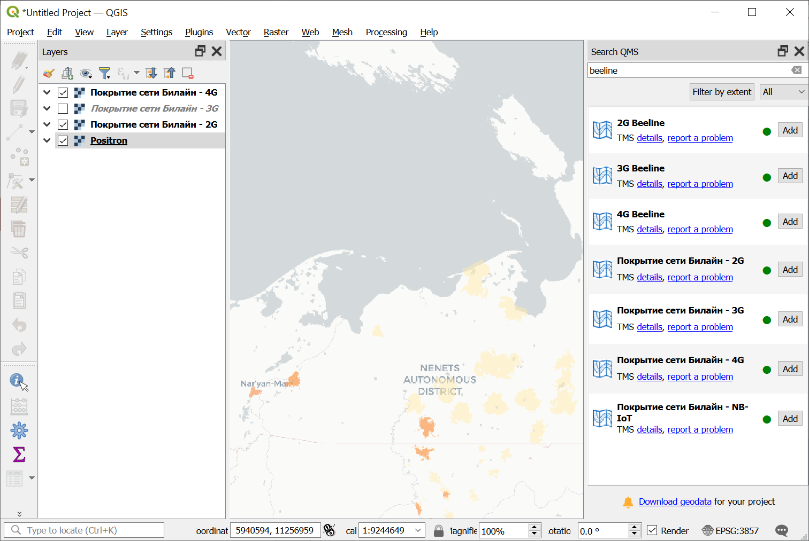
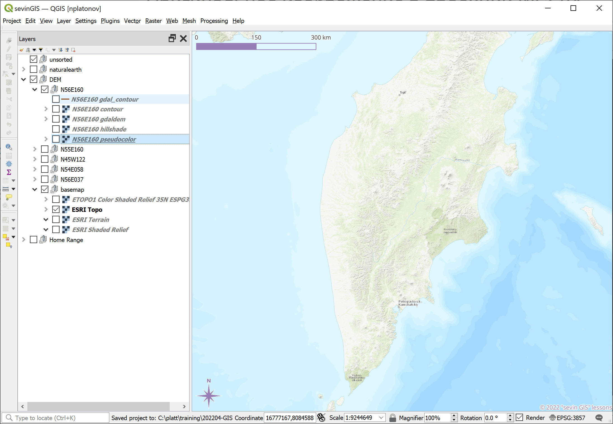
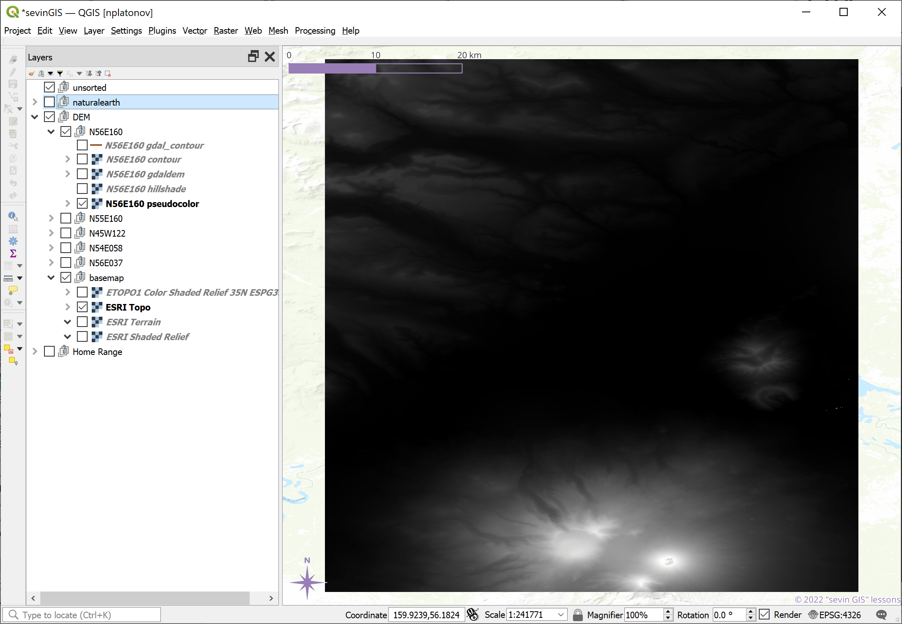
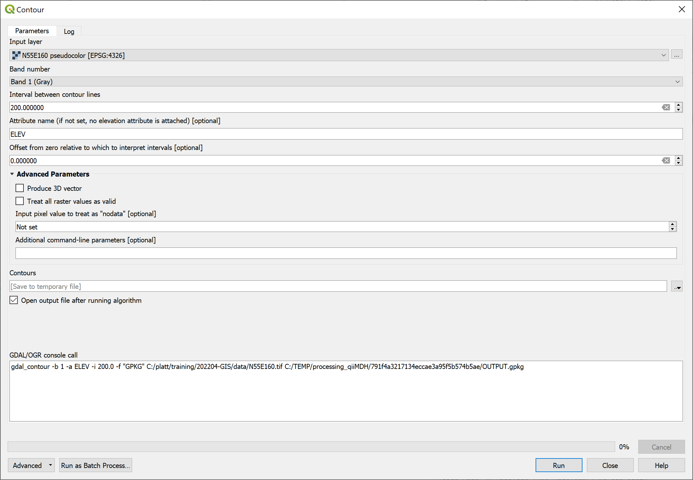

layout: true .toc.banner[ .shorttitle[ [ГИС аспирантура](break.html#home) ] ] --- name: home class: metadata customtitle middle left giphy .toc.sidebar.left-column[ .outline[ ## [Для картоосновы ](#Hfd829) ## [Для визуализации ](#H5252f) ## [Для проектов ](#Hd75d1) ## [Геокодирование ](#H7d561) ## [ЦМР ](#He7492) ] ] .toc.mainbar.right-column.scrollable[ .authors[ .author[Никита Платонов] .institute[с.н.с. ИПЭЭ РАН] ] .title[ Пространственные данные: получение и обработка ] .subtitle[ ГИС технологии в биологических исследованиях ] .what[ Тема 04 ] .where[ ] .when[ .updated[Обновлено: 2026-02-20 10:26] ] ] --- name: Hfd829 .toc.sidebar.left-column[ .outline[ ## [Для картоосновы ](#Hfd829).fg[].bg[] ### [Natural Earth ](#Hab20d) ## [Для визуализации ](#H5252f) ## [Для проектов ](#Hd75d1) ## [Геокодирование ](#H7d561) ## [ЦМР ](#He7492) ] ] .toc.mainbar.right-column.scrollable[ .header.h2.broad[ <span class="generation">Для картоосновы</span> ] .fixprecode[ Мы привыкли к картам в браузерах и в приложениях. Журналы выдвигают определенные требования к рисункам для повышения уровня восприятия информации + Копия экрана не удовлетворяет требованиям + Тайловые картографические web-сервисы, в основном, выдают данные экранного разрешения. Некоторые, как CartoDB, — с улучшенным (двухкратным), но и это не всегда дотягивает до требований + QGIS для Windows, вероятно, чувствителен к масштабу текста в параметрах ОС. Для оформления картографического мелкомасштабного и среднемасштабного материала есть данные в свободном доступе + Возможно, что-то будет лишь через VPN ] ] --- name: Hab20d .toc.sidebar.left-column[ .outline[ ## [Для картоосновы ](#Hfd829).fg[] ### [Natural Earth ](#Hab20d).fg[].bg[] ## [Для визуализации ](#H5252f) ## [Для проектов ](#Hd75d1) ## [Геокодирование ](#H7d561) ## [ЦМР ](#He7492) ] ] .toc.mainbar.right-column.scrollable[ .header.h3.broad[ <span class="generation">Natural Earth</span> .parent[.grand[Для картоосновы]] ] .fixprecode[ См. [Natural Earth World GIS Data](https://www.naturalearthdata.com/) <iframe src="https://www.naturalearthdata.com/downloads/" width="1330" height="480" data-external="1"></iframe> + Есть поддержка русскоязычных названий (см. поля "name_ru", "NAME_RU") ] ] --- class: notable middle inverse picsum .note[ .pulling[ .pull-left-55.font90[ ## Домашнее задание на [26 февраля 2026 г.](index.html#deadline1) В QGIS на основе данных Natural Earth 1:10m cоздать картооснову, ориентируясь на территорию, охватывающую Карелию и Мурманскую области. Желательно включить административные границы, батиметрию и контуры высот. Экспортировать через Export Image или Print Layout два изображения, соответствующих русскоязычным журнальным требованиям, с различным пространственным охватом: 1) только Кольский п-ов, 2) вместе Карелия и Мурманская обл., 3) свой район работ для описания изучаемой территории в разделе «Методы» 4) свой район работ для использования в качестве подложки для «Результатов» ] .pull-right-45[ <img src="assets/lesson04/homework.png" alt="" width="1330" height="600" notinvertable style="display: block; margin: auto auto auto 0;" /> ] ] ] --- name: H5252f .toc.sidebar.left-column[ .outline[ ## [Для картоосновы ](#Hfd829) ## [Для визуализации ](#H5252f).fg[] ### [QGIS <span class="hovertext" data-hover="QMS">QuickMapServices</span> ](#H5252f).fg[].bg[] ## [Для проектов ](#Hd75d1) ## [Геокодирование ](#H7d561) ## [ЦМР ](#He7492) ] ] .toc.mainbar.right-column.scrollable[ .header.h3.broad[ <span class="generation">QGIS <span class="hovertext" data-hover="QMS">QuickMapServices</span></span> .parent[.grand[Для визуализации]] ] .fixprecode[  ] ] --- name: Hd75d1 .toc.sidebar.left-column[ .outline[ ## [Для картоосновы ](#Hfd829) ## [Для визуализации ](#H5252f) ## [Для проектов ](#Hd75d1).fg[] ### [Global Elevation Map ](#Hd75d1).fg[].bg[] ### [EO Browser ](#Hcdbc0).bg[] ### [ASF ](#H0015a).bg[] ### [Earthdata ](#H99625).bg[] ### [Прибрежные данные ](#H1db23).bg[] ### [OpenStreetMap](#osm).bg[] ### [Earth Engine ](#Hd7400).bg[] ## [Геокодирование ](#H7d561) ## [ЦМР ](#He7492) ] ] .toc.mainbar.right-column.scrollable[ .header.h3.broad[ <span class="generation">Global Elevation Map</span> .parent[.grand[Для проектов]] ] .fixprecode[ Например, [Global Multi-resolution Terrain Elevation Data (GMTED2010)](https://www.usgs.gov/coastal-changes-and-impacts/gmted2010) <iframe src="https://www.usgs.gov/coastal-changes-and-impacts/gmted2010" width="1330" height="400px" data-external="1"></iframe> ] ] --- name: Hcdbc0 .toc.sidebar.left-column[ .outline[ ## [Для картоосновы ](#Hfd829) ## [Для визуализации ](#H5252f) ## [Для проектов ](#Hd75d1).fg[] ### [Global Elevation Map ](#Hd75d1).bg[] ### [EO Browser ](#Hcdbc0).fg[].bg[] ### [ASF ](#H0015a).bg[] ### [Earthdata ](#H99625).bg[] ### [Прибрежные данные ](#H1db23).bg[] ### [OpenStreetMap](#osm).bg[] ### [Earth Engine ](#Hd7400).bg[] ## [Геокодирование ](#H7d561) ## [ЦМР ](#He7492) ] ] .toc.mainbar.right-column.scrollable[ .header.h3.broad[ <span class="generation">EO Browser</span> .parent[.grand[Для проектов]] ] .fixprecode[ См. [Sentinel Hub EO Browser](https://apps.sentinel-hub.com/eo-browser) <iframe src="https://apps.sentinel-hub.com/eo-browser" width="1330" height="480" data-external="1"></iframe> ] ] --- name: H0015a .toc.sidebar.left-column[ .outline[ ## [Для картоосновы ](#Hfd829) ## [Для визуализации ](#H5252f) ## [Для проектов ](#Hd75d1).fg[] ### [Global Elevation Map ](#Hd75d1).bg[] ### [EO Browser ](#Hcdbc0).bg[] ### [ASF ](#H0015a).fg[].bg[] ### [Earthdata ](#H99625).bg[] ### [Прибрежные данные ](#H1db23).bg[] ### [OpenStreetMap](#osm).bg[] ### [Earth Engine ](#Hd7400).bg[] ## [Геокодирование ](#H7d561) ## [ЦМР ](#He7492) ] ] .toc.mainbar.right-column.scrollable[ .header.h3.broad[ <span class="generation">ASF</span> .parent[.grand[Для проектов]] ] .fixprecode[ См. [<span class="hovertext" data-hover="Alaska SAR Facility">ASF</span> Data Search Vertext](https://search.asf.alaska.edu) <iframe src="https://search.asf.alaska.edu" width="1330" height="605" data-external="1"></iframe> ] ] --- name: H99625 .toc.sidebar.left-column[ .outline[ ## [Для картоосновы ](#Hfd829) ## [Для визуализации ](#H5252f) ## [Для проектов ](#Hd75d1).fg[] ### [Global Elevation Map ](#Hd75d1).bg[] ### [EO Browser ](#Hcdbc0).bg[] ### [ASF ](#H0015a).bg[] ### [Earthdata ](#H99625).fg[].bg[] ### [Прибрежные данные ](#H1db23).bg[] ### [OpenStreetMap](#osm).bg[] ### [Earth Engine ](#Hd7400).bg[] ## [Геокодирование ](#H7d561) ## [ЦМР ](#He7492) ] ] .toc.mainbar.right-column.scrollable[ .header.h3.broad[ <span class="generation">Earthdata</span> .parent[.grand[Для проектов]] ] .fixprecode[ См. [Earthdata Search](https://search.earthdata.nasa.gov/search) <iframe src="https://search.earthdata.nasa.gov/search" width="1330" height="605" data-external="1"></iframe> ] ] --- name: H1db23 .toc.sidebar.left-column[ .outline[ ## [Для картоосновы ](#Hfd829) ## [Для визуализации ](#H5252f) ## [Для проектов ](#Hd75d1).fg[] ### [Global Elevation Map ](#Hd75d1).bg[] ### [EO Browser ](#Hcdbc0).bg[] ### [ASF ](#H0015a).bg[] ### [Earthdata ](#H99625).bg[] ### [Прибрежные данные ](#H1db23).fg[].bg[] ### [OpenStreetMap](#osm).bg[] ### [Earth Engine ](#Hd7400).bg[] ## [Геокодирование ](#H7d561) ## [ЦМР ](#He7492) ] ] .toc.mainbar.right-column.scrollable[ .header.h3.broad[ <span class="generation">Прибрежные данные</span> .parent[.grand[Для проектов]] ] .fixprecode[ [Data Derived from OpenStreetMap for Download](https://osmdata.openstreetmap.de/) <iframe src="https://osmdata.openstreetmap.de/" width="1330" height="605" data-external="1"></iframe> ] ] --- name: osm .toc.sidebar.left-column[ .outline[ ## [Для картоосновы ](#Hfd829) ## [Для визуализации ](#H5252f) ## [Для проектов ](#Hd75d1).fg[] ### [Global Elevation Map ](#Hd75d1).bg[] ### [EO Browser ](#Hcdbc0).bg[] ### [ASF ](#H0015a).bg[] ### [Earthdata ](#H99625).bg[] ### [Прибрежные данные ](#H1db23).bg[] ### [OpenStreetMap](#osm).fg[].bg[] ### [Earth Engine ](#Hd7400).bg[] ## [Геокодирование ](#H7d561) ## [ЦМР ](#He7492) ] ] .toc.mainbar.right-column.scrollable[ .header.h3.broad[ <span class="generation">OpenStreetMap</span> .parent[.grand[Для проектов]] ] .fixprecode[ .font83[ QGIS модуль [QuickMapServices](https://plugins.qgis.org/plugins/quick_map_services/), преимущественно, выдает тайлы на основе OpenStreetMap (OSM) данных. Сами данные доступны. #### Непосредственно <span class="hovertext" data-hover="OpenStreetMap">OSM</span> [Пример](https://www.openstreetmap.org/export#map=13/56.0052/38.3995) выгрузки данных. При нажатии кнопки 'Экспорт' по умолчанию создается файл `map.osm`. #### Overpass API Пример использования [Overpass API](https://overpass-api.de/api/map?bbox=38.3594,55.9835,38.4396,56.0270) + QGIS, модуль ["QuickOSM"](https://plugins.qgis.org/plugins/QuickOSM/) + Импорт `map.osm` + Экспорт в векторные (ГИС) форматы (ESRI Shapefile, GeoJSON). + R, пакет [`osmdata`](https://cran.rstudio.com/web/packages/osmdata/) + Формирование запроса для Overpass API + Использование средств R для работы с атрибутами + Экспорт в векторные (ГИС) форматы #### BBBike's <!-- <sup>*</sup> --> См. [BBBike's free download server](https://download.bbbike.org/osm/). ] ] ] --- class: inverse middle center background-color: #444 name: Hd7400 .toc.sidebar.left-column[ .outline[ ## [Для картоосновы ](#Hfd829) ## [Для визуализации ](#H5252f) ## [Для проектов ](#Hd75d1).fg[] ### [Global Elevation Map ](#Hd75d1).bg[] ### [EO Browser ](#Hcdbc0).bg[] ### [ASF ](#H0015a).bg[] ### [Earthdata ](#H99625).bg[] ### [Прибрежные данные ](#H1db23).bg[] ### [OpenStreetMap](#osm).bg[] ### [Earth Engine ](#Hd7400).fg[].bg[] ## [Геокодирование ](#H7d561) ## [ЦМР ](#He7492) ] ] .toc.mainbar.right-column.scrollable[ .header.h3.broad[ <span class="generation">Earth Engine</span> .parent[.grand[Для проектов]] ] .fixprecode[ Возможно, будет рассмотрено [дополнительно](lesson07.html#EarthEngine) ] ] --- class: middle name: H7d561 .toc.sidebar.left-column[ .outline[ ## [Для картоосновы ](#Hfd829).bg[] ## [Для визуализации ](#H5252f).bg[] ## [Для проектов ](#Hd75d1).bg[] ## [Геокодирование ](#H7d561).fg[].bg[] ### [Nominatim ](#Hf352c) ## [ЦМР ](#He7492) ] ] .toc.mainbar.right-column.scrollable[ .header.h2.broad[ <span class="generation">Геокодирование</span> ] .fixprecode[ Получение пространственных данных по текстовому запросу. Обратное геокодирование - поиск объекта по географическим координатам ] ] --- name: Hf352c .toc.sidebar.left-column[ .outline[ ## [Для картоосновы ](#Hfd829) ## [Для визуализации ](#H5252f) ## [Для проектов ](#Hd75d1) ## [Геокодирование ](#H7d561).fg[] ### [Nominatim ](#Hf352c).fg[].bg[] ## [ЦМР ](#He7492) ] ] .toc.mainbar.right-column.scrollable[ .header.h3.broad[ <span class="generation">Nominatim</span> .parent[.grand[Геокодирование]] ] .fixprecode[ URL: [Nominatim](https://nominatim.openstreetmap.org) <iframe src="https://nominatim.openstreetmap.org/ui/search.html?q=Черноголовка" width="1330" height="480" data-external="1"></iframe> ] ] --- name: He7492 .toc.sidebar.left-column[ .outline[ ## [Для картоосновы ](#Hfd829).bg[] ## [Для визуализации ](#H5252f).bg[] ## [Для проектов ](#Hd75d1).bg[] ## [Геокодирование ](#H7d561).bg[] ## [ЦМР ](#He7492).fg[].bg[] ### [QGIS визуализация ](#H3a454) ] ] .toc.mainbar.right-column.scrollable[ .header.h2.broad[ <span class="generation">ЦМР</span> ] .fixprecode[ Цифровая модель рельефа ЦМР (Digital Elevation Model DEM) [SRTM Tile Downloader](https://dwtkns.com/srtm30m/) <iframe src="https://dwtkns.com/srtm30m/" width="1330" height="480" data-external="1"></iframe> ] ] --- name: H3a454 .toc.sidebar.left-column[ .outline[ ## [Для картоосновы ](#Hfd829) ## [Для визуализации ](#H5252f) ## [Для проектов ](#Hd75d1) ## [Геокодирование ](#H7d561) ## [ЦМР ](#He7492).fg[] ### [QGIS визуализация ](#H3a454).fg[].bg[] #### [Через свойства растра ](#H5c4f5) #### [С помощью GDAL ](#Hcc6c1) ] ] .toc.mainbar.right-column.scrollable[ .header.h3.broad[ <span class="generation">QGIS визуализация</span> .parent[.grand[ЦМР]] ] .fixprecode[ На примере вулканов Камчатского п-ова  ] ] --- name: H5c4f5 .toc.sidebar.left-column[ .outline[ ## [Для картоосновы ](#Hfd829) ## [Для визуализации ](#H5252f) ## [Для проектов ](#Hd75d1) ## [Геокодирование ](#H7d561) ## [ЦМР ](#He7492).fg[] ### [QGIS визуализация ](#H3a454).fg[] #### [Через свойства растра ](#H5c4f5) <span class="bullet bullet-active">[•](#H5c4f5)</span><span class="bullet mslide24m">[•](#He5c3e)</span><span class="bullet mslide25m">[•](#H92c4d)</span><span class="bullet mslide26m">[•](#H0bcd8)</span><span class="bullet mslide27m">[•](#H7ccab)</span><span class="bullet mslide28m">[•](#Hec75a)</span><span class="bullet mslide29m">[•](#H9b729)</span>.fg[].bg[] #### [С помощью GDAL ](#Hcc6c1).bg[] ] ] .toc.mainbar.right-column.scrollable[ .header.h4.broad[ <span class="generation">Через свойства растра</span> .parent[.grand[QGIS визуализация .grand[ЦМР]]] ] .fixprecode[ Оригинальное изображение в проекции WGS84  ] ] --- name: He5c3e .toc.sidebar.left-column[ .outline[ ## [Для картоосновы ](#Hfd829) ## [Для визуализации ](#H5252f) ## [Для проектов ](#Hd75d1) ## [Геокодирование ](#H7d561) ## [ЦМР ](#He7492).fg[] ### [QGIS визуализация ](#H3a454).fg[] #### [Через свойства растра ](#H5c4f5) <span class="bullet bullet">[•](#H5c4f5)</span><span class="bullet bullet-active">[•](#He5c3e)</span><span class="bullet mslide25m">[•](#H92c4d)</span><span class="bullet mslide26m">[•](#H0bcd8)</span><span class="bullet mslide27m">[•](#H7ccab)</span><span class="bullet mslide28m">[•](#Hec75a)</span><span class="bullet mslide29m">[•](#H9b729)</span>.fg[].bg[] #### [С помощью GDAL ](#Hcc6c1).bg[] ] ] .toc.mainbar.right-column.scrollable[ .header.h4.broad[ <span class="generation">Через свойства растра</span> .parent[.grand[QGIS визуализация .grand[ЦМР]]] ] .fixprecode[ Изображение в сферической проекции Меркатора <img src="assets/lesson04/grey3857.png" alt="" width="1330" height="700" style="display: block; margin: auto auto auto 0;" /> ] ] --- name: H92c4d .toc.sidebar.left-column[ .outline[ ## [Для картоосновы ](#Hfd829) ## [Для визуализации ](#H5252f) ## [Для проектов ](#Hd75d1) ## [Геокодирование ](#H7d561) ## [ЦМР ](#He7492).fg[] ### [QGIS визуализация ](#H3a454).fg[] #### [Через свойства растра ](#H5c4f5) <span class="bullet bullet">[•](#H5c4f5)</span><span class="bullet bullet">[•](#He5c3e)</span><span class="bullet bullet-active">[•](#H92c4d)</span><span class="bullet mslide26m">[•](#H0bcd8)</span><span class="bullet mslide27m">[•](#H7ccab)</span><span class="bullet mslide28m">[•](#Hec75a)</span><span class="bullet mslide29m">[•](#H9b729)</span>.fg[].bg[] #### [С помощью GDAL ](#Hcc6c1).bg[] ] ] .toc.mainbar.right-column.scrollable[ .header.h4.broad[ <span class="generation">Через свойства растра</span> .parent[.grand[QGIS визуализация .grand[ЦМР]]] ] .fixprecode[ Настройка отображения теневой заливкой <img src="assets/lesson04/hillshade-symbology.png" alt="" width="1330" height="700" style="display: block; margin: auto auto auto 0;" /> ] ] --- name: H0bcd8 .toc.sidebar.left-column[ .outline[ ## [Для картоосновы ](#Hfd829) ## [Для визуализации ](#H5252f) ## [Для проектов ](#Hd75d1) ## [Геокодирование ](#H7d561) ## [ЦМР ](#He7492).fg[] ### [QGIS визуализация ](#H3a454).fg[] #### [Через свойства растра ](#H5c4f5) <span class="bullet bullet">[•](#H5c4f5)</span><span class="bullet bullet">[•](#He5c3e)</span><span class="bullet bullet">[•](#H92c4d)</span><span class="bullet bullet-active">[•](#H0bcd8)</span><span class="bullet mslide27m">[•](#H7ccab)</span><span class="bullet mslide28m">[•](#Hec75a)</span><span class="bullet mslide29m">[•](#H9b729)</span>.fg[].bg[] #### [С помощью GDAL ](#Hcc6c1).bg[] ] ] .toc.mainbar.right-column.scrollable[ .header.h4.broad[ <span class="generation">Через свойства растра</span> .parent[.grand[QGIS визуализация .grand[ЦМР]]] ] .fixprecode[ Отображение теневой заливкой <img src="assets/lesson04/hillshade-output.png" alt="" width="1330" height="700" style="display: block; margin: auto auto auto 0;" /> ] ] --- name: H7ccab .toc.sidebar.left-column[ .outline[ ## [Для картоосновы ](#Hfd829) ## [Для визуализации ](#H5252f) ## [Для проектов ](#Hd75d1) ## [Геокодирование ](#H7d561) ## [ЦМР ](#He7492).fg[] ### [QGIS визуализация ](#H3a454).fg[] #### [Через свойства растра ](#H5c4f5) <span class="bullet bullet">[•](#H5c4f5)</span><span class="bullet bullet">[•](#He5c3e)</span><span class="bullet bullet">[•](#H92c4d)</span><span class="bullet bullet">[•](#H0bcd8)</span><span class="bullet bullet-active">[•](#H7ccab)</span><span class="bullet mslide28m">[•](#Hec75a)</span><span class="bullet mslide29m">[•](#H9b729)</span>.fg[].bg[] #### [С помощью GDAL ](#Hcc6c1).bg[] ] ] .toc.mainbar.right-column.scrollable[ .header.h4.broad[ <span class="generation">Через свойства растра</span> .parent[.grand[QGIS визуализация .grand[ЦМР]]] ] .fixprecode[ 3D отображение <img src="assets/lesson04/map3D.png" alt="" width="1330" height="700" style="display: block; margin: auto auto auto 0;" /> ] ] --- name: Hec75a .toc.sidebar.left-column[ .outline[ ## [Для картоосновы ](#Hfd829) ## [Для визуализации ](#H5252f) ## [Для проектов ](#Hd75d1) ## [Геокодирование ](#H7d561) ## [ЦМР ](#He7492).fg[] ### [QGIS визуализация ](#H3a454).fg[] #### [Через свойства растра ](#H5c4f5) <span class="bullet bullet">[•](#H5c4f5)</span><span class="bullet bullet">[•](#He5c3e)</span><span class="bullet bullet">[•](#H92c4d)</span><span class="bullet bullet">[•](#H0bcd8)</span><span class="bullet bullet">[•](#H7ccab)</span><span class="bullet bullet-active">[•](#Hec75a)</span><span class="bullet mslide29m">[•](#H9b729)</span>.fg[].bg[] #### [С помощью GDAL ](#Hcc6c1).bg[] ] ] .toc.mainbar.right-column.scrollable[ .header.h4.broad[ <span class="generation">Через свойства растра</span> .parent[.grand[QGIS визуализация .grand[ЦМР]]] ] .fixprecode[ Настройка контурного отображения <img src="assets/lesson04/contour-symbology.png" alt="" width="1330" height="700" style="display: block; margin: auto auto auto 0;" /> ] ] --- name: H9b729 .toc.sidebar.left-column[ .outline[ ## [Для картоосновы ](#Hfd829) ## [Для визуализации ](#H5252f) ## [Для проектов ](#Hd75d1) ## [Геокодирование ](#H7d561) ## [ЦМР ](#He7492).fg[] ### [QGIS визуализация ](#H3a454).fg[] #### [Через свойства растра ](#H5c4f5) <span class="bullet bullet">[•](#H5c4f5)</span><span class="bullet bullet">[•](#He5c3e)</span><span class="bullet bullet">[•](#H92c4d)</span><span class="bullet bullet">[•](#H0bcd8)</span><span class="bullet bullet">[•](#H7ccab)</span><span class="bullet bullet">[•](#Hec75a)</span><span class="bullet bullet-active">[•](#H9b729)</span>.fg[].bg[] #### [С помощью GDAL ](#Hcc6c1).bg[] ] ] .toc.mainbar.right-column.scrollable[ .header.h4.broad[ <span class="generation">Через свойства растра</span> .parent[.grand[QGIS визуализация .grand[ЦМР]]] ] .fixprecode[ Контурное отображение <img src="assets/lesson04/contour-output.png" alt="" width="1330" height="700" style="display: block; margin: auto auto auto 0;" /> ] ] --- name: Hcc6c1 .toc.sidebar.left-column[ .outline[ ## [Для картоосновы ](#Hfd829) ## [Для визуализации ](#H5252f) ## [Для проектов ](#Hd75d1) ## [Геокодирование ](#H7d561) ## [ЦМР ](#He7492).fg[] ### [QGIS визуализация ](#H3a454).fg[] #### [Через свойства растра ](#H5c4f5).bg[] #### [С помощью GDAL ](#Hcc6c1) <span class="bullet bullet-active">[•](#Hcc6c1)</span><span class="bullet mslide31m">[•](#H8cb22)</span><span class="bullet mslide32m">[•](#H15bb7)</span><span class="bullet mslide33m">[•](#H62bc4)</span>.fg[].bg[] ] ] .toc.mainbar.right-column.scrollable[ .header.h4.broad[ <span class="generation">С помощью GDAL</span> .parent[.grand[QGIS визуализация .grand[ЦМР]]] ] .fixprecode[ Настройка GDAL модуля `gdal_contour`  ] ] --- name: H8cb22 .toc.sidebar.left-column[ .outline[ ## [Для картоосновы ](#Hfd829) ## [Для визуализации ](#H5252f) ## [Для проектов ](#Hd75d1) ## [Геокодирование ](#H7d561) ## [ЦМР ](#He7492).fg[] ### [QGIS визуализация ](#H3a454).fg[] #### [Через свойства растра ](#H5c4f5).bg[] #### [С помощью GDAL ](#Hcc6c1) <span class="bullet bullet">[•](#Hcc6c1)</span><span class="bullet bullet-active">[•](#H8cb22)</span><span class="bullet mslide32m">[•](#H15bb7)</span><span class="bullet mslide33m">[•](#H62bc4)</span>.fg[].bg[] ] ] .toc.mainbar.right-column.scrollable[ .header.h4.broad[ <span class="generation">С помощью GDAL</span> .parent[.grand[QGIS визуализация .grand[ЦМР]]] ] .fixprecode[ Контур после GDAL модуля `gdal_contour` <img src="assets/lesson04/gdal-contour-output.png" alt="" width="1330" height="700" style="display: block; margin: auto auto auto 0;" /> ] ] --- name: H15bb7 .toc.sidebar.left-column[ .outline[ ## [Для картоосновы ](#Hfd829) ## [Для визуализации ](#H5252f) ## [Для проектов ](#Hd75d1) ## [Геокодирование ](#H7d561) ## [ЦМР ](#He7492).fg[] ### [QGIS визуализация ](#H3a454).fg[] #### [Через свойства растра ](#H5c4f5).bg[] #### [С помощью GDAL ](#Hcc6c1) <span class="bullet bullet">[•](#Hcc6c1)</span><span class="bullet bullet">[•](#H8cb22)</span><span class="bullet bullet-active">[•](#H15bb7)</span><span class="bullet mslide33m">[•](#H62bc4)</span>.fg[].bg[] ] ] .toc.mainbar.right-column.scrollable[ .header.h4.broad[ <span class="generation">С помощью GDAL</span> .parent[.grand[QGIS визуализация .grand[ЦМР]]] ] .fixprecode[ Настройка GDAL модуля `gdaldem` <img src="assets/lesson04/gdaldem-setting.png" alt="" width="1330" height="700" style="display: block; margin: auto auto auto 0;" /> ] ] --- name: H62bc4 .toc.sidebar.left-column[ .outline[ ## [Для картоосновы ](#Hfd829) ## [Для визуализации ](#H5252f) ## [Для проектов ](#Hd75d1) ## [Геокодирование ](#H7d561) ## [ЦМР ](#He7492).fg[] ### [QGIS визуализация ](#H3a454).fg[] #### [Через свойства растра ](#H5c4f5).bg[] #### [С помощью GDAL ](#Hcc6c1) <span class="bullet bullet">[•](#Hcc6c1)</span><span class="bullet bullet">[•](#H8cb22)</span><span class="bullet bullet">[•](#H15bb7)</span><span class="bullet bullet-active">[•](#H62bc4)</span>.fg[].bg[] ] ] .toc.mainbar.right-column.scrollable[ .header.h4.broad[ <span class="generation">С помощью GDAL</span> .parent[.grand[QGIS визуализация .grand[ЦМР]]] ] .fixprecode[ Растр после GDAL модуля `gdaldem` <img src="assets/lesson04/gdaldem-output.png" alt="" width="1330" height="700" style="display: block; margin: auto auto auto 0;" /> ] ] --- name: beforefinalizing .toc.sidebar.left-column[ .outline[ ## [Для картоосновы ](#Hfd829) ## [Для визуализации ](#H5252f) ## [Для проектов ](#Hd75d1) ## [Геокодирование ](#H7d561) ## [ЦМР ](#He7492) ] ] .toc.mainbar.right-column.scrollable[ ]